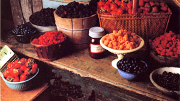
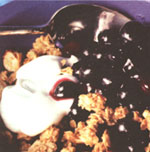

NATURAL HEALTH
Cooking with nature's sweet treat by Anne Vassal
OH, THOSE LAZY DAYS OF SUMMER- sand-filled Saturdays at the beach, snoozing in your favorite lawn chair between the pages of last winter's magazines. And massive berry consumption during those few short weeks that we dream about in January while shoveling out the car.
Those heavenly berries are the high point of my summers. Since I don't look forward to getting burnt to a crisp, I stay away from the beach on Saturday and head out early to the farmer's market. A vast variety of fresh-picked berries are awaiting my arrival. I always buy more than we could possibly consume, but I'm always afraid that my supply will run out before next Saturday. By about the following Wednesday, no one at my house wants to look at another berry (except me) and my son has gone back to eating raisins on his cereal, which makes me wonder if he's in any way related to me. You can make an easy berry dessert (such as "Berry Cheesecake Pizza,"), freeze those berries, or do both.
You'll pat yourself on the back next winter when you have nothing else to look forward to but bad weather-all the recipes written here work just as well with frozen berries. So what if you don't own a deep freeze? (Although I highly recommend it as a good investment.) Get rid of those frozen waffles-which you can buy anytime-and there'll be plenty of berry room.
When selecting your berries, remember that bigger doesn't necessarily mean better. Big strawberries are beautiful but can have a pulpy texture. I prefer the sweetness and texture of the smaller ones. Berries are as ripe as they'll ever be the moment they're picked. After that, they deteriorate rapidly, so it's important to choose fresh berries. Store uncovered, and do not wash the berries until your are ready to use them.
Blueberries: Choose berries that appear plump, unwrinkled, and uniformly blue in color. They should have a powdery look, called "bloom," which is a sign of freshness. The bloom fades as the berries age.
Those heavenly berries are the high point of my summers. Since I don't look forward to getting burnt to a crisp, I stay away
from the beach on Saturday and head out early to the farmer's market.
Strawberries: Look for a full red color (no white tips) and firm flesh. The leaves should still be attached. Medium to small berries are sweeter. If you are picking your own berries at a U-Pick farm, avoid the deep red ones because they'll be mushy by the time you arrive home. Strawberries are high in Vitamin C, but they lose this vitamin rapidly after they are cut.
Raspberries: They should be a lively red color, not maroon, which indicates that they are overripe. Choose berries that are uncrushed, free of mold, and in boxes that are not stained or leaking. Look for little white spots, which are the beginning of mold. They're extremely fragile, so transport carefully.
Blackberries: They should be uniformly bright black in color, free of mold, and uncrushed. Berries are high in both fiber and Vitamin C. They also contain potassium and Vitamin A, and are low in calories.
For the more adventurous types, picking berries yourself makes a great and rewarding outing that's fun for all ages. You'll find that you will even save money over the market or grocer price at any local U-Pick berry farms.
This sauce can be used on fresh fruit, vanilla ice cream or frozen yogurt, waffles, pancakes, and many other delicious ways that I'm sure you'll think of.
1 pint raspberries
1 tablespoon sugar or honey
1 tablespoon Amaretto (or liqueur ofyour choice)
Blend until smooth. If the sauce is too thick, add a little bit of water until you reach the desired consistency. If you like a smoother sauce, strain out the seeds.
Note: For a non-alcoholic sauce, try "Torani Orgeat Syrup" (almond syrup for drinks-liquor stores and some groceries may have it as well). It contains sugar, so omit the sugar in the recipe.
This is delicious topped with frozen yogurt. Frozen blueberries will make the crisp juicier, with more liquid. Serve in bowls.
2 cups blueberries - fresh or frozen plain topping:
2 tablespoons honey
2 tablespoons brown sugar
3 tablespoons frozen margarine - cut into 1/2 inch slices
3/4 cup oats
1/4 cup whole wheat pastry flour
1/2 teaspoon cinnamon
1/2 teaspoon nutmeg
Preheat oven to 375°F Put the blueberries in an 8"x8" square pan. If using frozen blueberries, don't defrost first. Place the topping ingredients in a food processor (or a pastry blender) and pulse it just until it's in pea-size crumbs. Don't overmix. Sprinkle on top of blueberries and bake for 20 to 25 minutes until the topping is lightly browned. Let cool before serving.
Fruit shakes can be made in a minute and taste better than malts. Our favorites are peach with almond flavoring, melon (musk or cantaloupe) with almond flavoring, and strawberry with vanilla. Refreshing on a hot day, these are great for breakfast.
2 cups semi frozen fruit
1 cup milk or yogurt
1 tablespoon honey
flavoring: 1/2 teaspoon vanilla or almond extract
1 teaspoon Orgeat Syrup (omit the honey if you use the syrup)
Try this coffee cake for Saturday morning breakfast. It can be prepared in 10 minutes and bakes for only about 20 minutes, so you won't need to heat up the house for long. If there are any leftovers, they can be Saturday night's dessert.
1/4 cup oil (I use canola oil) cup honey
1 tablespoon sugar
1 egg
1/2 teaspoon vanilla
1/2 teaspoon cinnamon
1 tablespoon lemon juice
1 teaspoon lemon rind
1/2 cup buttermilk
2 teaspoons baking powder
1-1/2 cups whole wheat pastry flour, sifted
1 cup blueberries, fresh or frozen (do not defrost first)
Preheat oven to 350°F. Blend the oil, honey, and sugar together. Add the vanilla, spices, lemon, and buttermilk. Mix well. Briefly mix in the flour and baking powder. Pour into greased 8" or 9" square pan. (A round cake pan will do.) Top evenly with the blueberries and press them into the batter a bit with your fingers. Sprinkle the topping over the blueberries. Bake at least 25 minutes until a toothpick comes out clean.
This dessert pizza can be decorated with whole strawberries, raspberries, or blueber ries. Keep the kids busy making a Fourth of July pizza while you lounge on the patio. Have them make a star out of blueberries, filling in the background with raspberries.
Crust:
2 cups whole wheat pastry flour or unbleached white flour
1/2 cup margarine, frozen
4 to 5 tablespoons water
Cut the margarine into the flour by pulsing in a food processor. Gradually add the water with the food processor on, until the dough mixes into a ball. Cover and refrigerate at least 30 minutes.
Filling:
1 8-ounce package "lite" cream cheese
1/3 cup sugar
1 tablespoon honey
2 teaspoons lemon juice
1 teaspoon lemon rind
Blend in a, food processor or blender.
To make pizza:
Roll out the dough on wax paper into a 13" circle. Fit into a 12"x 1/2" pizza pan. Trim and fold under the edging, fluking the edge as you turn the pan.
Bake the crust in a pre-heated 350°F oven and pour on the topping, spreading evenly. Return to oven for 10 to 15 minutes. Cool before decorating with fruit. Chill until serving.
1/2 cup water
2 teaspoons arrowroot flour*
2 tablespoons sugar
Bring to a boil. Then stir in:
4 cups blueberries (frozen or fresh)
1 tablespoon lemon juice
Simmer at least five minutes until thick. Remove from the stove and add lemon juice. Chill thoroughly before spreading on the pizza.
(*Available at health food stores-better for you, and better tasting than corn starch.)
When it comes to fruit, almost anything is freezable. Freezing fruit is much easier than canning, which causes loss of valuable nutrients and texture. Berries will keep in the deep freeze at 0°F for at least a year (other fruit such as peaches, melon, and grapes should be used up over the winter). Some of the fruit listed below for freezing are "nondefrostable fruit," which means that it must be eaten in a frozen or semifrozen state or used in cooking. Defrosted, it will become a mushy mess. Non-defrostable fruit can be used in fruit shakes (recipe listed), fruit-juice popsicles, baking, or eating plain. My son likes to munch on frozen grapes, melon chunks, or blueberries on a hot day.
Berries will freeze better if they aren't washed first. Any other washed fruit must be thoroughly dried before freezing.
Berries: Remove leaves of stems. Freeze strawberries whole.
Peaches: Must be peeled and quartered, then drizzled with lemon juice. Work fast before they begin to turn brown.
Use small zip-lock bags, loosely packing the fruit in the bag 3/4 full. With a permanent marker, date the package (the year is important), and write down the contents. Let as much air out of the bag as possible before closing it. Freeze and enjoy in January.
Freezable fruit: Blueberries, raspberries, blackberries, strawberries, cherries
Non-defrostable fruit: Bananas, grapes, apples, plums, cranberries, melon (cantalope, honeydew musk), peaches-semi-defrost is OK.
|
 |
 |
|